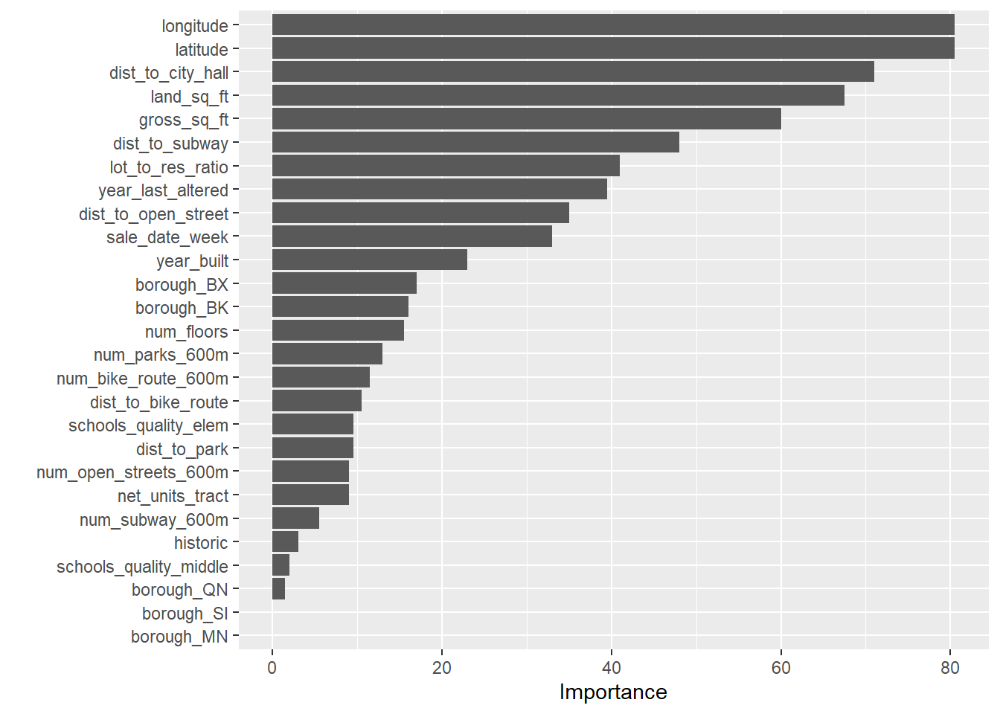
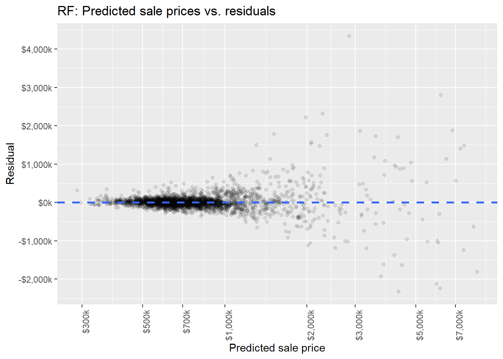

We will use the tidymodels framework for building and tuning the model. Tidymodels uses similar principles to the tidyverse to provide standard interfaces across many different model types. It uses an integrated workflow for all parts of the modeling process, from data preprocessing to tuning models to fitting the final model.
Selecting one model from several
The nonlinear relationships uncovered in exploratory data analysis indicate that models that capture nonlinear effects will be more suitable for our data. Additionally, given that we have more than a handful of predictors, it is more efficient to use models with automatic feature selection, which will weight variables by relevance or importance during model training. This capability will avoid the need to manually specify predictors in the model recipe.
We will compare the performance of these four models in order to select one for tuning.
Linear model: An ordinary least squares model, included to compare to the other models and not as a candidate.
MARS model: A regression model that captures nonlinear relationships using spline features.
Boosted trees with xgboost: A random forest that learns from the performance of previous trees.
Rules-based model with cubist: A model that uses ensembles of rules derived from “flattened” trees.
Specifying the models
All the models are initially specified to use the default settings for their engines, rather than having settings manually specified or determined with tuning.
Code
# LM model speclm_spec <-linear_reg() |>set_mode("regression") |>set_engine("lm")# MARS model specearth_spec <-mars() |>set_mode("regression") |>set_engine("earth")# Boosted tree model specxgboost_spec <-boost_tree() |>set_mode("regression") |>set_engine("xgboost")# Cubist model speccubist_spec <-cubist_rules() |>set_engine("Cubist")
Writing a recipe for preprocessing
In tidymodels, preprocessing the data is done by writing “recipes”. All models can use the same recipe, as none of them have mutually-exclusive requirements for preprocessing.
Code
base_recipe <-# Specify the basic reciperecipe(formula = sale_price ~ .,data = sfh_prices_train ) |># Change variable roles to identifier, rather than predictorsupdate_role(c( sale_id, address, bbl, neighborhood, nta_code ),new_role ="identifier" ) |># Convert the borough variable to a factorstep_string2factor(all_of("borough")) |># Convert sale dates into week-of-yearstep_date(one_of("sale_date"),features ="week",keep_original_cols =FALSE ) |># Convert the historic district indicator into an explicit numericstep_mutate(historic =as.numeric(historic) ) |># Impute any missing valuesstep_impute_knn(all_numeric_predictors()) |># Create dummy variables for the borough variable, using one-hot encodingstep_dummy(all_nominal_predictors(), one_hot =TRUE) |># Zero-variance filterstep_zv(all_predictors()) |># Correlation filterstep_corr(all_predictors(),threshold =0.9 ) |># Normalize (center and scale) all predictorsstep_normalize(all_predictors())
Defining a cross-validation scheme
Overfitting to the training set can be mitigated by using a resampling scheme to repeatedly test models generated during the training process. Ten-fold cross-validation, used here, splits the data randomly into ten subsets and holds one in reserve to validate the model fitted on the other nine. Cross-validation is repeated 10 times, holding each subset in reserve once in turn. The performance statistics generated during each round of cross-validation are averaged to produce a final metric for evaluating the model.
Code
# Create a resampling scheme using 10-fold cross-validation.set.seed(412412)sfh_prices_folds <-vfold_cv(data = sfh_prices_train,v =10,repeats =1,strata = sale_price )
Comparing multiple models
All three nonlinear models substantially outperformed the linear model. The MARS model underperformed the others by a small margin, while the Cubist and boosted tree models were very close in both RMSE and R-squared.
The Cubist model will be selected for tuning, as it has a slight edge over the boosted tree model in consistency (i.e., smaller standard error), though either model would work here.
We select a model with an algorithm that favors a less complex model (in this case, fewer committees), allowing a performance loss of up to than 2% compared the best-performing model. The principle here is that a less complex model has a better chance of generalizing to the test set.
The model selected by this process has the following parameters:
Note that the selected Cubist model performs substantially better than the untuned model, and has only 0.76% performance loss compared to the best candidate model produced by tuning.
Here are the selected model’s performance metrics:
# A tibble: 2 × 4
model .metric mean std_err
<chr> <chr> <dbl> <dbl>
1 cubist_rules rmse 245265. 7546.
2 cubist_rules rsq 0.876 0.00892
Testing the tuned model
The last step is to fit the selected model to the test set. The metrics for the test fit show that the model’s performance is comparable to the best model trained on the training set.
# A tibble: 3 × 4
.metric .estimator .estimate .config
<chr> <chr> <dbl> <chr>
1 rmse standard 247730. Preprocessor1_Model1
2 mae standard 117576. Preprocessor1_Model1
3 rsq standard 0.869 Preprocessor1_Model1
Variable importance
Based on the variable importance plot for the fitted model, location (both absolute and in relationship to city hall), building and lot area, are the most important variables. This finding makes intuitive sense, as location and size of homes are the most heavily-promoted details in real estate listings. Of all the measures of nearby amenities, distance to the nearest subway station is the most important.

Predictions and residuals
The prediction-residual plot shows significant heteroskedacity. That is, the residuals tend to increase in magnitude as predicted prices increase, indicating a non-constant variance in the residuals. The distribution in the “mainstream” segment identified during visualization (under $1 million) is compact and symmetrical, while the spread in the “high-end” segment is much wider and has notable outliers. This heteroskedacity may indicate that there are latent “rules” for the high-end housing market that do not match the median market. If this is the case, further rounds of modeling could be able to account for these rules.
The heteroskedacity may also be the result of a sales dataset that is relatively sparse in the high end – the number of homes sold for more than $1 million was only 2054, and only 445 homes were sold for more than $2 million.

The graph on the left shows the ratio of residuals to predicted prices. The graph shows that the distribution is approximately symmetrical (in this graph, a ). The near-zero slope of the trend line indicates that the model’s error bias (toward either over- or under-prediction) is consistent across the price distribution.
The graph on the right is the absolute-value version of the graph on the left. The mean absolute residual (deviation from perfect prediction) is shown by the blue line, and the red trend line indicates that the model tends to produce predictions with larger relative errors as prices increase – perhaps, again, due to sparse data.